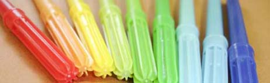

Rotuladores
Un rotulador, marcador o plumón es un instrumento de escritura, parecido al bolígrafo, que contiene su propia tinta y su uso principal es escribir en superficies distintas al papel. En varios países de Latinoamérica se conoce como "plumón".
La punta del rotulador suele estar hecha de un material poroso, como el fieltro. Es posible, aunque raro, que tenga una punta de material no poroso. La empresa Pilot creó en 2005 un bolígrafo con tinta permanente llamado Permaball.

El rotulador fue creado en 1962 por el japonés Yukio Horie. En los años 1980 se introdujeron los primeros rotuladores de seguridad, con una tinta invisible pero fluorescente. Con esta tinta se puede marcar objetos de valor, y en caso de un robo, descubrir estas señales con una luz ultravioleta
Rotulador No Permanente
Los rotuladores no permanentes suelen ser usados en superficies donde no es necesario que las marcas duren mucho tiempo, o que si fuese así sería inconveniente para ese material como en las transparencias o las pizarras blancas. Estos rotuladores son generalmente utilizados en superficies no porosas, donde la tinta se adhiere a esta superficie sin ser absorbida. Su trazo sobre tableros porcenalizados se borra fácilmente con un paño seco, dejando el tablero limpio sin mancharlo.
Rotulador Permanente
El rotulador permanente o indeleble es utilizado cuando se desea que lo dibujado resista en el tiempo. La tinta suele ser resistente al agua, contiene sustancias tóxicas como xileno o tolueno, y tiene la capacidad de escribir en una variedad de superficies, desde papel a metal o roca.
Los rotuladores indelebles son comúnmente usados para marcar discos como CD y DVD, aunque está práctica ha sido desalentada porque se cree que el xileno y el tolueno dañan los discos. Existen otros rotuladores sin estos elementos, basados en el alcohol o agua que son más seguros.